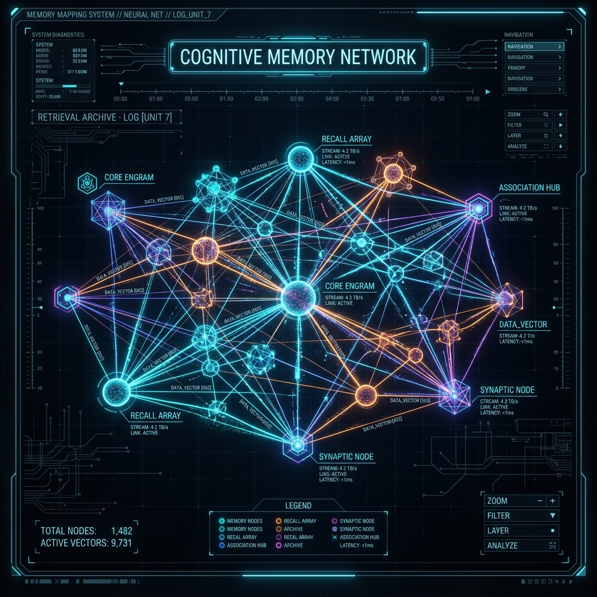
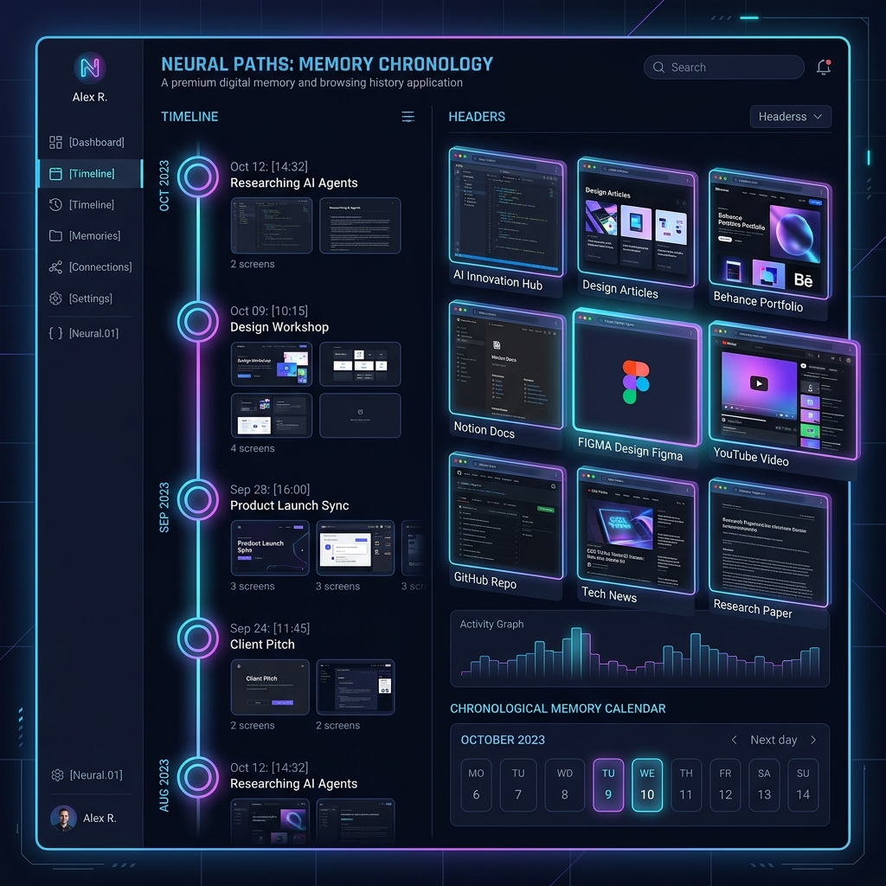

Internet Memory Layer is a personal internet brain. It acts as a passive chrome history, Obsidian, GraphRAG, and Notion AI, fully offline on your machine.
By indexing text chunks in ChromaDB and connecting entity nodes in Neo4j, the unified context synthesis queries local Ollama models to return responses cited directly to your browser history logs.
Generates a vector fingerprint for every tracked topic cluster, mapping neural centrality configurations and calculating your knowledge velocity across domains over time.
Records chronological snapshots of scroll actions and tab focuses, enabling slide-scrub capabilities to visually reconstruct your historical research journeys.
